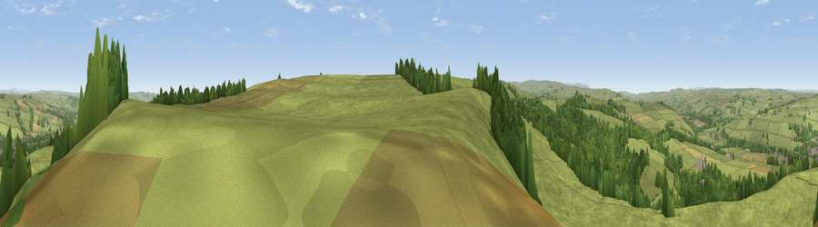

Viewpoint near Haydon Bridge
#11878 in England · top 28% of its area beats it · near Haydon BridgeWhere it is
The exact computed spot (NY 84025 62025). Click the marker for map links.
The view, rendered

A 360° render of this exact spot computed from the terrain model, tree cover and land cover — summer colours, afternoon light, calibrated against photographs of famous viewpoints. Real trees, hedges and buildings will differ in detail.
The panorama
Grey silhouette: terrain skyline in each direction (720 bearings, Earth curvature and refraction included). Dashed green: skyline with trees (+15 m) and buildings (+8 m) as obstacles. Blue strip: how far the ground is visible on each bearing.
Where the view opens
Wedge length = distance to the farthest visible ground on that bearing (vegetation-aware). Rings at 10, 25 and 50 km.
What fills the view
82% grassland · 15% woodland · 2% cropland ·
Angular shares of the visible panorama (visual magnitude), not map area. Landscape diversity 0.25 (0–1 Shannon).
Key numbers
More beautiful places nearby
The staircase of upgrades: each row has a higher view potential than everything closer. Driving times are estimates from straight-line distance, calibrated against real road routing — check an actual route before setting out.
| Place | Direction | Drive | Score |
|---|---|---|---|
| Catton Beacon | SSW · 3 km | ~8 min | 64.6 |
| Thorngrafton Common | NW · 7 km | ~15 min | 65.0 |
| Viewpoint near Catton | SW · 8 km | ~16 min | 66.0 |
| Viewpoint near Fourstones | NE · 9 km | ~17 min | 71.4 |
| Viewpoint near Allenheads | S · 17 km | ~30 min | 74.6 |
| Grey Nag | SW · 23 km | ~37 min | 75.7 |
| Viewpoint near Castle Carrock | WSW · 26 km | ~42 min | 76.9 |
| Viewpoint near Renwick | SW · 27 km | ~43 min | 77.0 |
54.95261, -2.25096 · source: screening · position refined by local search. Computed location — check access rights before visiting.